Crewmates — mates, termos y accesorios

hecho para compartir
Carmen de Patagones · Buenos Aires
- Envíos a todo el país
- Retiro en Carmen de Patagones
- Atención personalizada
El catálogo
Todo Crewmates, en un solo lugar
Tocá la foto de cualquier producto para ver más detalle.
Un mate bien elegido se toma distinto. Por eso probamos cada pieza antes de venderla.
Clientes
Lo que dicen los que ya lo tienen
Mates que ya están en Viedma, en Patagones y en un montón de provincias. Estas son historias reales de gente que compró.
Antes de comprar
Preguntas frecuentes
¿Qué medios de pago aceptan?
Mercado Pago, transferencias y efectivo.
¿Cómo son los envíos?
Enviamos a todo el país. También podés retirar sin cargo en Carmen de Patagones.
¿Los mates vienen curados?
No vienen curados, para que puedas vivir la experiencia completa de curarlo vos mismo.
Nuestra historia
Un poco sobre Crewmates
Somos un emprendimiento de Carmen de Patagones. Elegimos cada mate, termo y bombilla a mano y los revisamos antes de que salgan para tu casa.